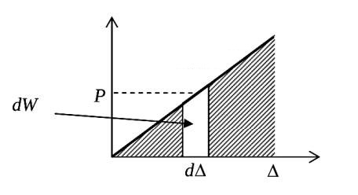

Materyel Mekaniği - 3
Alan Atalet Momenti (Area Moment of Inertia)
Herhangi bir şekil için, o şekilde olan bir eksene olan uzaklık karesinin alan üzerinden entegre edilmesiyle "alan atalet momenti" sonucu elde ediliyor [3, sf. 362].

Formül, $z$ eksen bazlı olarak
$$ I_z = \int_A y^2 \mathrm{d} A $$
Bu entegral belli şekiller / alanlar için muhakkak hep aynı olur. Üstteki kalıp bazı alanlarda, mesela inşaat mühendisliğinde, çok ortaya çıktığı için bilinir, ve belli şekiller için $I$ formülü önceden hesaplanmıştır.
Üstteki basit bir şekil tabii ki, ama onun da bir formülü var, eğer türetmek istersek,
$$ I_z = \int_{-h/2}^{h/2} y^2 (b \mathrm{d} y) = b \frac{y^3}{3} \bigg\vert_{-h/2}^{h/2} = \frac{b h^3}{12} $$
Yani dikdörtgensel şekiller için $I_z$ gerektiğinde hemen üstteki formül kullanılabilir. Dairesel, üçgensel, vb. pek çok şekil için bu hesap mevcut.
Eksenel Yükleme (Uniaxial Loading)
Pek çok problemde kullanılan en temel deformasyon (yamulma, şekil değiştirme) türü altta görülen tür yüklemedir. Bir demir, ya da plastik çubuk iki kuvvetle boyu yönünde (tek bir eksende yani) iki tarafa doğru çekilir, bizim ilgilendiğimiz çubukta seçilen herhangi bir noktanın nereye gittiği, yani o tek eksendeki deformasyonun ne olduğu.

Diyelim ki üstteki her üç çubuk aynı maddeden yapılmış, farklı uzunlukları ve kalınlıkları var, her çubuğa sıfırdan başlayarak belli seviyelerde $P$ kuvveti ile yük uyguluyoruz, ve çubuğun uzunluk değişimi (elongation) $\delta$ değerinin, ki tek boyuttaki deformasyon budur, ne olduğuna bakıyoruz. Her 1,2,3 çubuğu için $P/A$ ve $\delta/L$ değerlerini grafiklersek çoğunlukla sonuç ya alt soldaki gibi ya da sağdaki gibi çıkacaktır [1, sf. 76].

Eğer materyelin eksenel yük ve uzama ilişkisi lineer ise o zaman sonuç soldaki resim gibi çıkar. Grafiğin eğimine elastiklik genliği (modulus of elasticity) adı verilir ve çoğunlukla ona $E$ sembolü verilir. Formülsel olarak belirtirsek,
$$ E = \frac{P/A}{\delta / L} \qquad (1) $$
$E$ formülüne Young'in Genliği (Young's Modulus) ismi de verilir.
$\delta/L$ büyüklüğü mevcut büyüklüğe nazaran ne kadar uzama olduğunu gösteren bir oran, mesela 200 cm için 2 cm büyüme var ise 2/200, bu bir tür yüzde hesabı olarak görülebilir (ek olarak yüz ile de çarpmak gerekir ama aşağı yukarı öyle).
Not: $P$ çoğunlukla basınç (pressure) için kullanılır ama burada kuvvet.
$P/A$'nin birimi kuvvet bölü birim alan olduğu ve $\delta / L$ birimsiz olduğu için $E$'nin birimi de kuvvet bölü birim alan olacaktır. Daha ileride göreceğiz ki $P/A$ bir alan $A$ üzerindeki ortalama stres değeridir, $\delta / L$ ise $L$ boyunca hissedilen gerinim değeridir (strain).
Yani $E$ birimi Newton bölü metrekare olacaktır, $N/m^2$ ya da Pascal, Pa terimi kullanılabilir. Bazı tipik değerler demir ve çelik için $200\cdot 10^6$ kilo Newton / $m^2$, aliminyum için $69 \cdot 10^6$ $kN / m^2$.
(1) formülünü düzenleyip tekrar yazarsak,
$$ \delta = \frac{PL}{AE} $$
Üstteki formül Hooke Kanunu'nun basit bir formudur aslında; bu isim Robert Hooke bilimcisine atfendir, ki pek çok materyelin yük-deformasyon eğrisinin lineer olduğunu keşfeden Hooke'tur. Bu arada materyelin eğrisi lineer ise bu durum sarma yaylar (coiled springs) için de aynıdır. Kavramsal ve formülsel olarak bir demir çubuğu yay olarak görsek mesela $10^3 mm^2$ genişliğinde ve 1 metre uzunluğunda, Hooke Kanunu
$$ F = k x $$
ki $F$ kuvvet, $k$ yay sabiti ve $x$ uzama, mevcut semboller ile,
$$ P = k \delta $$
$$ k = \frac{P}{\delta} $$
$$ = \frac{P}{PL / AE} = \frac{1}{L / AE} = \frac{AE}{L} = \frac{10^3 10^{-3} 205}{1} = 205 GN/m $$
Gerinim Enerji Yoğunluğu (Strain Energy Density)
Yapılan iş ve enerji arasındaki bağlantıyı işledik. Şimdi bir maddeye uygulanan stres ve onun sebep olduğu gerinimin yol açtığı esnemeden bahsedelim, bir kuvvet uygulanıyor ve bir esneme oluyor, bu hesap kuvvet çarpı mesafe ile yapılan iş olarak hesaplanabilir. Diyelim ki bir çubuk (bar) üzerinde tek eksenel $P$ kuvveti uygulanıyor, sonucunda $\mathrm{d} \Delta$ kadar uzama var [4, sf. 243],

Yapılan iş
$$ \mathrm{d} W = P \mathrm{d} \Delta $$
Eğer $P$ sürekli uygulansa ve uzama devam etse tüm ufak uzamalar üzerinden yapılan iş $\mathrm{d} \Delta$ üzerinden bir entegral gerektirir, fakat alttaki gibi basit durumda sadece üçgen alan hesabı yeterli,

Şu formülü kullanabiliriz,
$$ U = \frac{1}{2} P \Delta $$
Önceden hatırlarsak $\Delta = PL / EA$ idi, o zaman üstteki
$$ U = \frac{P^2 L}{2 E A} \qquad (4) $$
olur.
Yoğunluğa gelirsek; gerinim enerjisi madde içinde farklı seviyelerde olabilir, onu sonsuz ufak bir hacim için hesaplarız ve gerektiğinde sonrada tüm enerji için tüm hacim üzerinden entegre ederiz.
Alttaki çubuktaki ufak bir hacim birimine bakalım, birimin kenarları $\mathrm{d} x$, $\mathrm{d} y$, $\mathrm{d} z$ büyüklüğünde, birimin hacmi tabii ki $\mathrm{d} V = \mathrm{d} x \mathrm{d} y \mathrm{d} z$.

Formül (4) kullanalım, stres için $\sigma$ sembolü kullanacağız, stres kuvvet bölü alan demektir, ufak birimdeki alan $A = \mathrm{d} y \mathrm{d} z$, o zaman $P = \sigma_{xx} \mathrm{d} y \mathrm{d} z$, üstteki ufak birimdeki gerinim enerjisi
$$ U = \frac{(\sigma_{xx} \mathrm{d} y \mathrm{d} z)^2 \mathrm{d} x}{2 E \mathrm{d} y \mathrm{d} z} = \frac{\sigma_{xx}^2 \mathrm{d} y^2 \mathrm{d} z^2 \mathrm{d} x}{2 E \mathrm{d} y \mathrm{d} z} = \frac{\sigma_{xx}^2 \mathrm{d} y \mathrm{d} z \mathrm{d} x}{2 E} $$
$$ = \frac{\sigma_{xx}^2 \mathrm{d} V}{2 E} $$
Yoğunlukla ilgileniyoruz demiştik, bize birim hacimdeki $U$ lazım, o zaman yoğunluk $u$
$$ u = \frac{\sigma_{xx}^2}{2 E} $$
Hooke Kanunu $\sigma_{xx} = E \epsilon_{xx}$ üzerinden üstteki son formül, gerinim enerji yoğunluğu
$$ u = \frac{1}{2} \sigma_{xx} \epsilon_{xx} $$
olarak ta gösterilebilir. Alttaki resimde görülebileceği gibi bu tek eksenel stres-gerinim eğrisinin altında kalan alandır,

Daha çetrefil $\sigma-\epsilon$ ilişkileri (ve eğrileri) için $u$ hesabı bir entegral olacaktır,
$$ u = \int_{0}^{\epsilon_{T}} \sigma_{xx} \mathrm{d} \epsilon_{xx} $$
Gerinim, esneme, enerji alakası şöyle de görülebilir, uygulanan stresin oluşturduğu esneme bir iş yapıyor, bu iş ile enerjiyi esnemeye transfer ediyoruz, bir lastiği uzattığımızda enerji o lastiğin "elastisitesine" aktarılıyor sanki, bu işin / enerjinin birim hacimdeki ölçüsü gerilim enerji yoğunluğunu veriyor bize.
İlerlemeden önce birazdan lazım olacak iki formülü bulalım. Daha önce gördük ki
$$ I = \int \int X_2^2 \mathrm{d} X_2 \mathrm{d} X_3 $$
ve
$$ M = \int \int -X_2 \sigma_{11} \mathrm{d} X_2 \mathrm{d} X_3 $$
Üstteki iki formülü birleştirelim, $M$ içinde $I$ oluşturalım, ve yerine koyalım,
$$ M = \int \int -\frac{X_2}{X_2^2} X_2^2 \sigma_{11} \mathrm{d} X_2 \mathrm{d} X_3 = -\frac{1}{X_2} \sigma_{11} I $$
Buradan $\sigma_{11}$ eşitliğine geçilir,
$$ \implies \sigma_{11} = -\frac{M X_2}{I} $$
Kaynaklar
[1] Crandall, An Introduction to the Mechanics of Solids
[3] Craig, Mechanics of Materials, Third Edition
[4] Kelly, University of Auckland, Solid Mechanics, Part I
[6] Gere, Mechanics of Materials
[7] Khennane, Introduction to Finite Element Analysis using Matlab and Abaqus
Yukarı